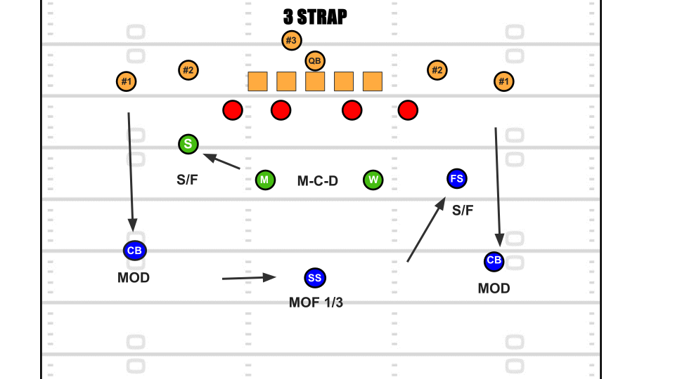

An in-depth look at how NFL defensive coverages work on game day. Each coverage includes diagrams and video examples from real NFL coaches' film.
Cover 0
Cover 0 is a man-to-man blitz coverage where each defender in coverage is playing man to man coverage on the 5 receivers for the offense. Cover 0 can be either a 5 or a 6-man blitz. A 6-man blitz in cover 0 indicates 1 on 1 coverage for each receiver, a 5 man blitz in cover 0 means there's a double team on one receiver.
Cover 1
Cover 1 is a man to man coverage concept with one safety covering the deep middle of the field and/or another safety/linebacker covering the middle of the field 5-10 yards beyond the L.O.S. who is called a "Robber". If cover 1 is called with a 5 man blitz this limits the defenses ability to have a robber.
Cover 2
Cover 2 is a split-field 7 man coverage with 5 underneath defenders and 2 deep defenders. A popular variant of Cover 2 with 1 minor difference is Tampa 2, where a Linebacker becomes a deep 1/3rd defender and tries to bait the Quarterback into making mistakes over the middle of the field.
Cover 3

Cover 3 is a 7 man coverage concept with 4 underneath defenders and 3 deep defenders. Cover 3 is extremely popular due to its ability to both limit big plays and commit extra bodies for run defense. Can also be played as a 6 man coverage concept known as a "Fire Zone".
Cover 4
Cover 4 is a split field 7 man coverage concept with 3 underneath defenders and 4 deep defenders. Commonly used on passing downs and is very good against all passing formations but is very weak against the run.